🦁 Selvatici


Volpe Rossa
Un incontro ravvicinato con uno dei Selvatici piu furbi e affascinanti del bosco.

Elefante Africano
Il gigante gentile delle savane africane, simbolo di saggezza e memoria.


🐕 Animali Domestici

Cane (Golden Retriever)
Il compagno di vita ideale: fedele, giocherellone e perfetto per le famiglie.


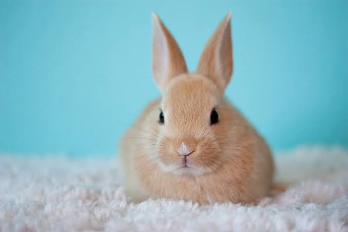


🦅 Uccelli


Martin Pescatore
Esplosione di colori vivaci in un piccolo e abilissimo pescatore fluviale.
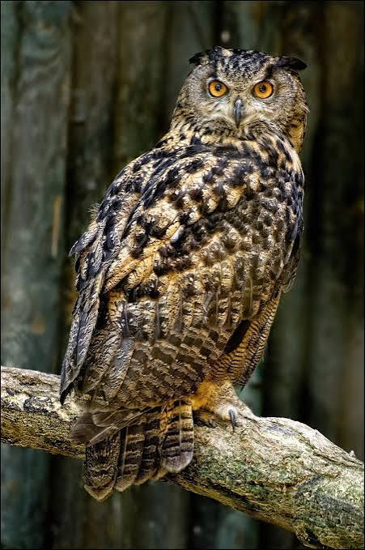
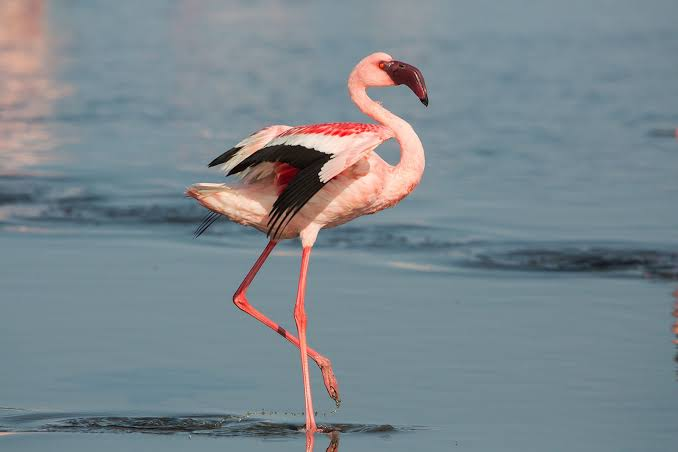
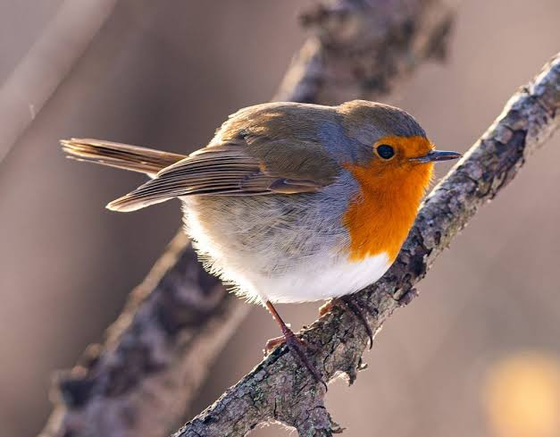
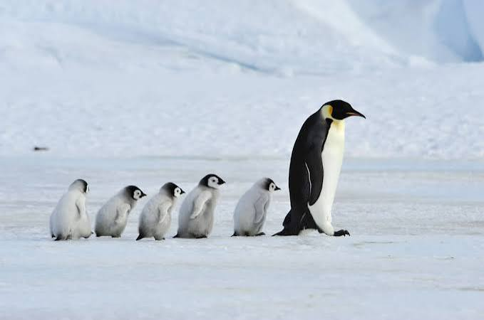
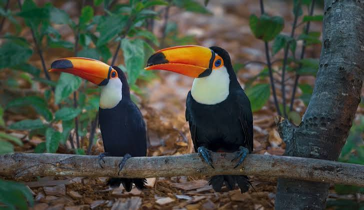
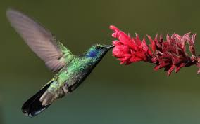
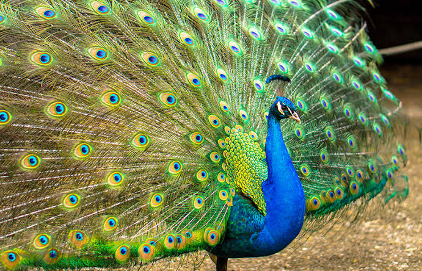
🐬 Animali Marini

Tartaruga Marina
Un viaggio rilassante nelle profondita dell'oceano insieme a una creatura millenaria.

Squalo Bianco
La potenza pura del predatore oceanico per eccellenza nelle acque cristalline.
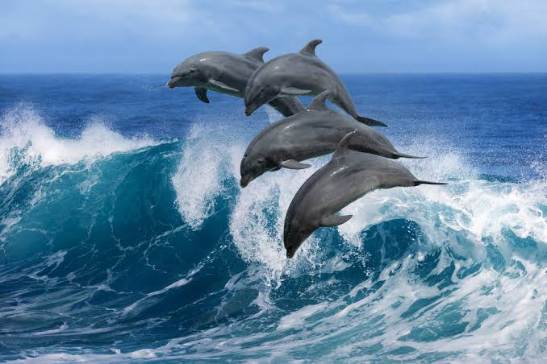

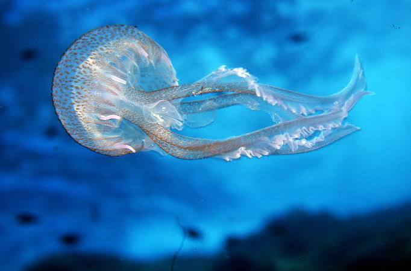
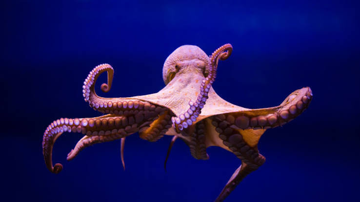
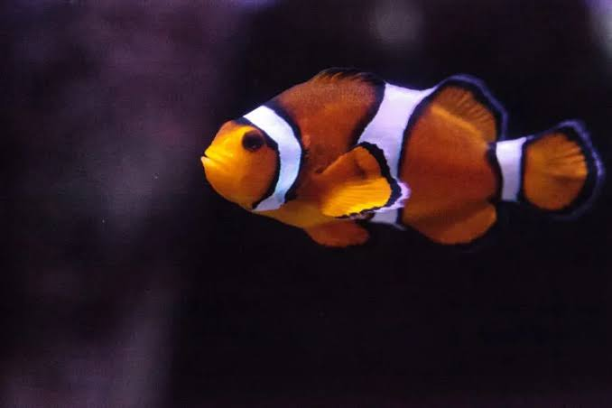
Pesce Pagliaccio
Il coloratissimo abitante delle barriere coralline, famoso del film Nemo.
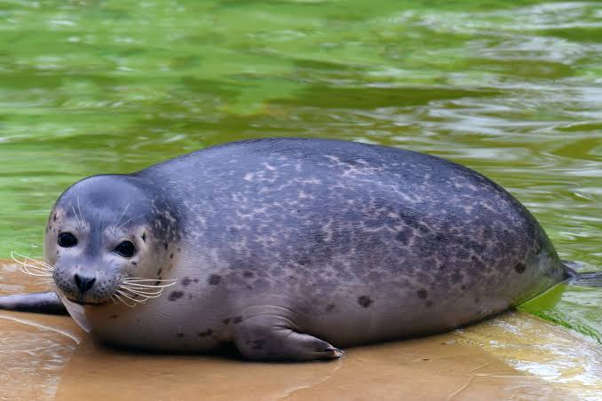

🦎 Rettili


Iguana Verde
Un meraviglioso rettile esotico mentre si gode il calore del sole tropicale.
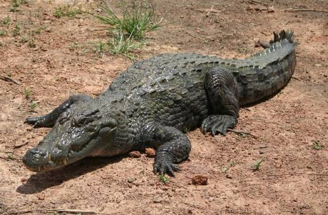
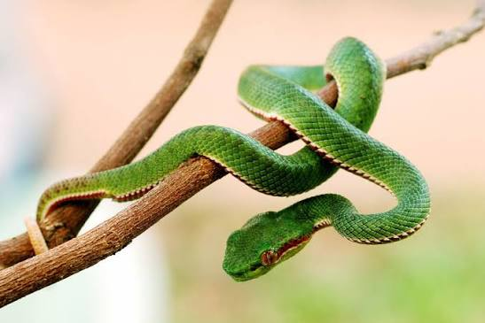
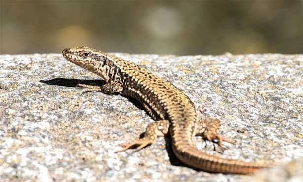
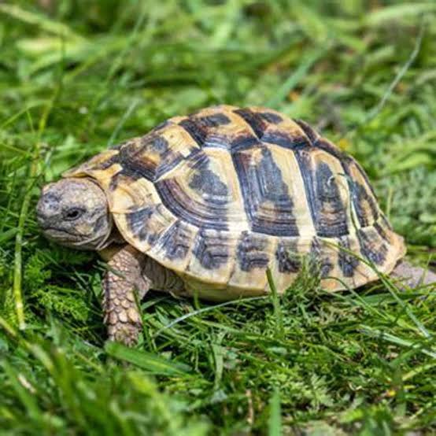

Drago di Komodo
Il piu grande lucertolone del mondo, predatore leggendario dell'Indonesia.
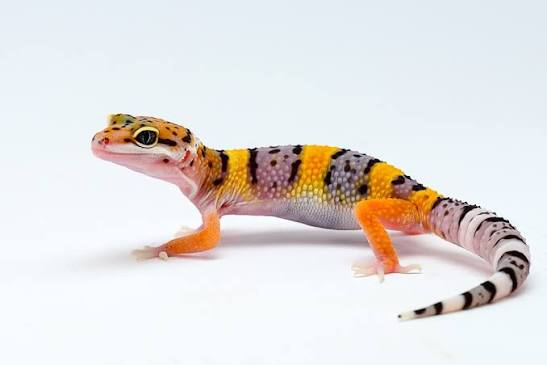
🗺️ Zoo del Mondo
Scopri gli zoo e i parchi naturalistici in tutto il mondo. Clicca sulla mappa per esplorare!